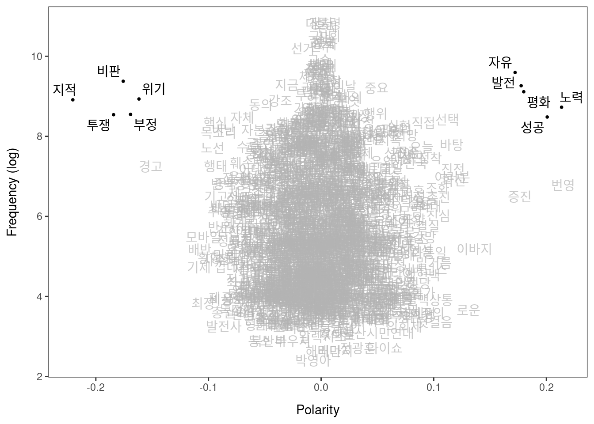
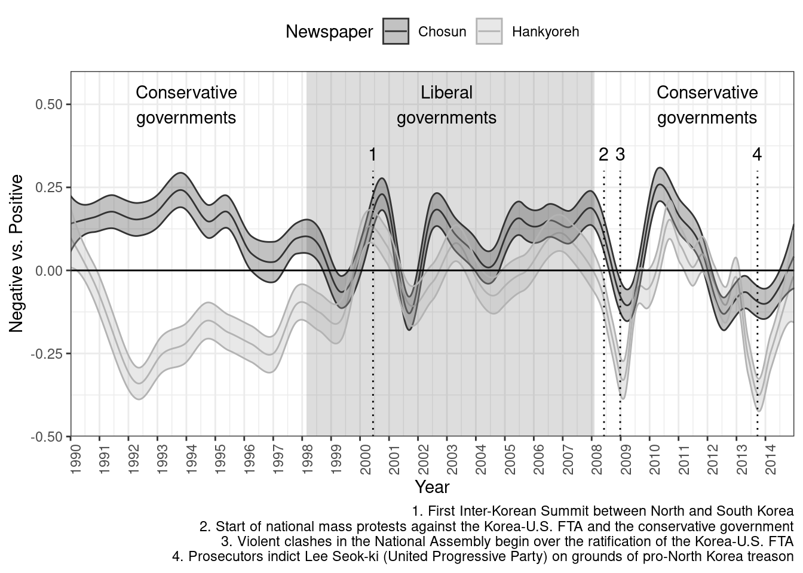
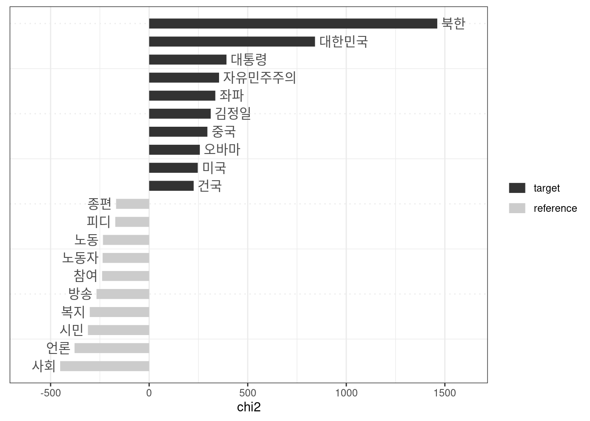
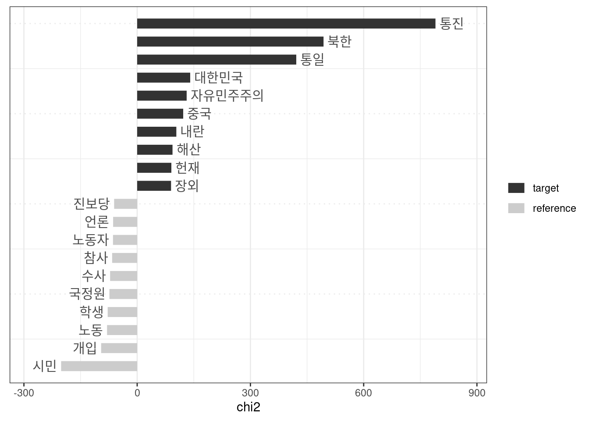
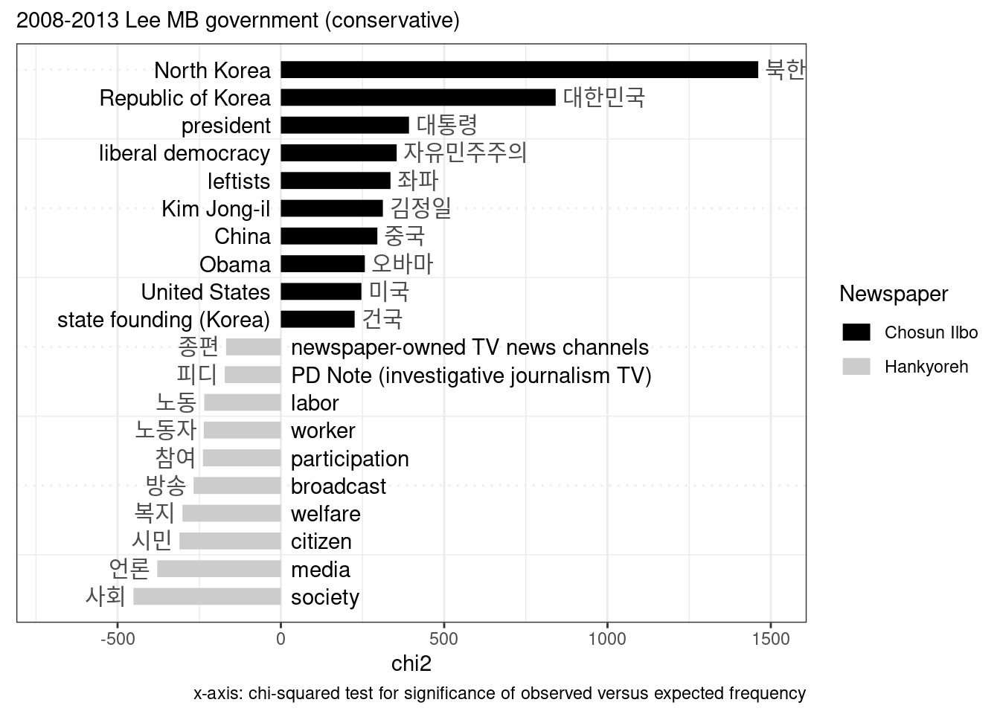
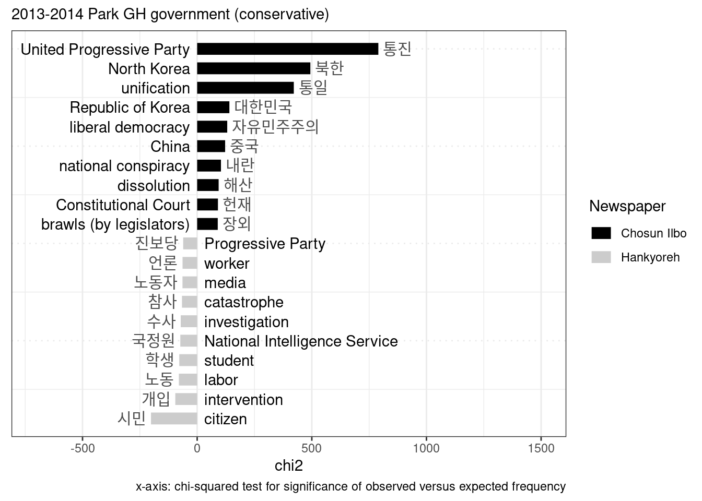

Chapter 4: Framing Democracy
Online Appendix
Load libraries
library(lubridate)
library(ggplot2)
library(dplyr)
library(tidytext)
library(quanteda)
library(scales)
library(LSX)Load the data.
data_dem <- readRDS("data/data_dem_nouns")#Sentiment lexicon Load the Korean sentiment lexicon.
##
## ─ Column specification ────────────────────────────
## cols(
## term = col_character()
## )
##
##
## ─ Column specification ────────────────────────────
## cols(
## term = col_character()
## )See the top sentiment words.
tidy_news <- data_dem %>%
unnest_tokens(word, text)
tidy_news %>%
inner_join(senti) %>%
count(word, sort = TRUE)## Joining, by = "word"senti_news <- tidy_news %>%
inner_join(senti) %>%
count(Newspaper, Prezparty, sentiment) %>%
tidyr::spread(sentiment, n, fill = 0) %>%
mutate(sentiment = positive - negative)## Joining, by = "word"senti_word_counts <- tidy_news %>%
inner_join(senti) %>%
filter(Government == "1990-1993 Roh TW") %>%
count(word, sentiment, Government, sort = TRUE) %>%
ungroup()## Joining, by = "word"senti_word_countsPlot the top sentiment words.
senti_word_counts %>%
group_by(sentiment) %>%
top_n(25) %>%
ungroup() %>%
mutate(word = reorder(word, n)) %>%
ggplot(aes(word, n, fill = sentiment)) +
geom_col(show.legend = FALSE) +
facet_wrap(~sentiment, scales = "free_y") +
labs(y = "Contribution to sentiment",
x = NULL) +
coord_flip() +
scale_fill_grey() +
theme_bw()## Selecting by n # LSS sentiments
# LSS sentiments
# tokenize text corpus and remove various features
corp_sent <- data_dem %>%
unique() %>%
mutate(Body = gsub("</?[^>]+>|▲ 종이신문보기", "", Body)) %>%
corpus() %>%
corpus_reshape(to = "sentences")
toks <- corp_sent %>%
tokens()
# create a document feature matrix from the tokens object
dfmat <- toks %>%
dfm(remove = "") %>%
dfm_trim(min_termfreq = 5)# Sys.setlocale(locale = "Korean")
topfeatures(dfmat, 20)## 정치 대통령 우리 민주주의 사회 국민 정부 문제
## 50122 49881 45575 40653 36895 36084 36072 34870
## 신문 한국 경제 국가 민주 사람 선거 미국
## 32272 30780 30682 29663 28301 27958 26583 25632
## 종이 북한 후보 때문
## 24582 24389 23145 21882# Sys.setlocale(locale = "Korean")
dict_sentiment <- dictionary(list(positive = c("발전", "자유", "평화", "협력", "성공", "노력"),
negative = c("투쟁", "부정", "반대", "지적", "비판", "위기")))
dict_sentiment## Dictionary object with 2 key entries.
## - [positive]:
## - 발전, 자유, 평화, 협력, 성공, 노력
## - [negative]:
## - 투쟁, 부정, 반대, 지적, 비판, 위기seed <- as.seedwords(dict_sentiment)
seed## 발전 자유 평화 협력 성공 노력 투쟁 부정 반대 지적 비판 위기
## 1 1 1 1 1 1 -1 -1 -1 -1 -1 -1 # identify context words
context_terms <- char_context(toks, pattern = "*민주주의*", p = 0.05)
# run LSS model
tmod_lss <- textmodel_lss(dfmat, seeds = seed,
terms = context_terms, k = 300) head(coef(tmod_lss), 20) # most positive words## 번영 노력 성공 평화 발전 증진 자유
## 0.21479901 0.21351124 0.20075878 0.17991536 0.17760091 0.17643081 0.17223599
## 이바지 로운 확신 진전 여러분 바탕 선택
## 0.13626828 0.13078818 0.11779667 0.11696754 0.11656323 0.11603484 0.11195796
## 진심 촉진 조화 뒷걸음 밑거름 정착
## 0.10424605 0.10415989 0.10333999 0.10083522 0.09988357 0.09655877 tail(coef(tmod_lss), 20) # most negative words## 매도 반문 추종 목소리 기고 행태
## -0.08751398 -0.08994838 -0.09052156 -0.09088724 -0.09315024 -0.09371869
## 핵심 사수 노선 횡행 모바일 최장
## -0.09393267 -0.09470642 -0.09632810 -0.09919730 -0.10427393 -0.10460830
## 배반 기제 경고 위기 부정 비판
## -0.10772929 -0.10836093 -0.15146231 -0.16170337 -0.16919385 -0.17568630
## 투쟁 지적
## -0.18425159 -0.22043635 textplot_terms(tmod_lss, dict_sentiment[c("negative", "positive")])
#ggsave("plots/4_dem_seeds.jpg", width=8, height= 5, dpi = 300) dfmat <- dfm_group(dfmat)
# predict sentiment scores
pred <- as.data.frame(predict(tmod_lss, se.fit = TRUE, newdata = dfmat))
pred$date <- docvars(dfmat, "Date")
pred$Newspaper <- docvars(dfmat, "Newspaper") pred_sm_chos <- pred %>%
filter(Newspaper == "Chosun") %>%
smooth_lss(engine = "locfit")
pred_sm_hani <- pred %>%
filter(Newspaper == "Hankyoreh") %>%
smooth_lss(engine = "locfit")
pred_sm_hankook <- pred %>%
filter(Newspaper == "Hankook") %>%
smooth_lss(engine = "locfit")
# Sys.setlocale(locale = "Korean")
head(pred_sm_chos) head(pred_sm_hani) head(pred_sm_hankook)plot trend
x <- bind_rows("Chosun" = pred_sm_chos, "Hankyoreh" = pred_sm_hani, .id = "Newspaper") %>%
mutate(date = as.Date(date, format = "ymd")) %>%
mutate(Newspaper = as.factor(Newspaper)) %>%
ggplot(aes(date, fit, group = Newspaper, color = Newspaper, fill = Newspaper)) +
annotate("rect", xmin = as.Date("1998-02-25"), xmax = as.Date("2008-02-2"),
ymin = -Inf, ymax = Inf, alpha = 0.2) +
geom_line() +
geom_ribbon(aes(ymin = fit + se.fit, ymax = fit - se.fit), alpha = 0.3) +
geom_hline(yintercept = 0) +
scale_color_manual(values = c("grey20", "grey70")) +
theme_bw() +
labs(x = "Year", y = "Negative vs. Positive",
caption = "1. First Inter-Korean Summit between North and South Korea\n2. Start of national mass protests against the Korea-U.S. FTA and the conservative government\n3. Violent clashes in the National Assembly begin over the ratification of the Korea-U.S. FTA\n4. Prosecutors indict Lee Seok-ki (United Progressive Party) on grounds of pro-North Korea treason") +
scale_x_date(breaks = "1 year", labels = date_format("%Y"),
limits = as.Date(c("1990-01-01", "2014-12-31")), expand = c(0,0)) +
theme(axis.text.x = element_text(angle = 90, hjust = 1),
legend.position = "top") +
scale_fill_manual(values=c("grey20", "grey70")) +
annotate(geom = "text", x = as.Date("1994-01-01"), y = 0.5,
label = "Conservative\ngovernments", hjust = "center") +
annotate(geom = "text", x = as.Date("2003-01-01"), y = 0.5,
label = "Liberal\ngovernments", hjust = "center") +
annotate(geom = "text", x = as.Date("2012-01-01"), y = 0.5,
label = "Conservative\ngovernments", hjust = "center") +
annotate(geom = "text", x = as.Date("2000-06-13"), y = 0.35,
label = "1", hjust = "center", size = 4) +
annotate(geom = "text", x = as.Date("2008-06-05"), y = 0.35,
label = "2", hjust = "center", size = 4) +
annotate(geom = "text", x = as.Date("2008-12-26"), y = 0.35,
label = "3", hjust = "center", size = 4) +
annotate(geom = "text", x = as.Date("2013-09-23"), y = 0.35,
label = "4", hjust = "center", size = 4) +
annotate("segment", x = as.Date(c("2000-06-13", "2008-06-05", "2008-12-26","2013-09-23")),
xend = as.Date(c("2000-06-13", "2008-06-05", "2008-12-26", "2013-09-23")),
y = - Inf, yend = 0.3, linetype = 3) +
ylim(-0.45, 0.55)
x
#ggsave("plots/4_dem_lss.jpg", width=9, height= 5, dpi = 300)Look up key periods
data_dem %>%
filter(Date > "2008-12-01" & Date < "2009-01-31") %>%
mutate(Body = gsub("</?[^>]+>|▲ 종이신문보기", "", Body))read news
# Sys.setlocale(locale = "Korean")
x <- data_dem %>%
filter(Newspaper == "Hankyoreh" & Date > "2014-1-01" & Date < "2014-12-31") %>%
mutate(Body = gsub("</?[^>]+>|▲ 종이신문보기", "", Body)) %>%
filter(grepl("시민", text)) %>%
select(Date, Title, Body, Newspaper)
x x[38,] %>% write.csv()## "","Date","Title","Body","Newspaper"
## "1",2014-05-23,"대형비리 낳는 ‘공공성 교란자들’…“민주적 통제 강화해야”","개정안은 수입 장벽을 낮춰 국민들이 좀더 싼 값에 설탕을 살 수 있도록 하려는 취지였다. 하지만 삼양사, 대한제당과 함께 설탕산업의 과점체제를 형성해온 씨제이한테는 개정안이 이익의 감소를 뜻했다. 그해 하반기 내내 이 비서관은 국회를 설득하려 여의도에 상주하다시피 했다. 개정안은 결국 씨제이의 뜻대로 통과되지 못한 채 흐지부지됐다. 얼마 있다가 그는 씨제이를 떠나 다시 보건복지위 소속 유재중 새누리당 의원실로 자리를 옮겼다. 검찰에 체포될 당시 그의 신분은 보좌관이었다. 그는 국회 공무원과 민간 기업체 직원이라는 옷을 번갈아가면서 입었다. 그러면서 공공성을 추구해야 할 국회와 사익을 추구하는 기업체 사이에서 ‘징검다리’ 역할을 수행했다. 세월호 참사를 통해 국민들의 행복과 안전을 위해 봉사해야 할 정부 기구와 공직자들이 사익과 결탁해 이를 배반하는 모습이 적나라하게 드러났다. 해양수산부 등의 퇴직 공무원들이 민간기업들을 대변하는 조합이나 협회 등에 재취업해, 공무원들의 기업들에 대한 관리와 감독을 약화시키는 ‘방패’ 구실을 했다. 이런 양상은 비단 행정부에만 해당되지 않는다. ‘공공성의 담지자’로서 부여받는 권한을 국민이 아닌 자신의 사익을 위해 사용하는 ‘공공성 교란자’는 국회와 법조계에도 만연해 있다. 이씨의 경우처럼 국회 보좌진(보좌관, 비서관)을 ‘모셔가는’ 곳은 대부분 재벌 대기업들이다. 국회 보건복지위 소속 한 의원실의 보좌관은 “기업의 대관 업무(국회나 행정부를 상대로 하는 업무)를 하는 사람들이 평소 의원실을 왔다 갔다 하다가 봐뒀던 보좌관이 있으면 스카우트 제의를 하거나, 그가 그만두면 자리를 제안한다”고 말했다. 한순간 ‘재벌맨’이 된 보좌관들은 주로 과거 자신이 몸담았던 국회를 상대로 로비를 하는 대관 업무를 맡는다. 다른 보좌관은 “대관의 가장 중요한 업무는 총수나 임직원이 국정감사 증인으로 채택되는 것을 막는 것이다. 입법과 정책 관련 현황 파악도 중요하다”고 말했다. 이들은 ‘로비’를 하러 의원실을 찾아오지만, 사적 친분관계로 접근해오기 때문에 의원실에서도 멀리하기가 쉽지 않다. 계속 왕래하면서 밥도 먹고, 술도 마시고 하다보면 자연스럽게 선후배나 친구처럼 지내게 된다. 이씨처럼 국회에서 대기업으로 갔다가 다시 국회로 들어오는 경우도 적지 않다. 국회 보좌진이 기업의 대관 업무 쪽으로 많이 옮겨가고 있다는 것은 국회 안팎에서 널리 알려진 사실이지만, 정확히 몇명이나 재취업하는지는 통계가 없어 확인하기 쉽지 않다. 이들 역시 행정부 공무원들처럼 퇴직 뒤 재취업할 때 국회 공직자윤리위원회의 심사를 받아야 하지만, 지난해 딱 한 명이 심사를 받았을 만큼 유명무실하다. 판검사 출신들 역시 대기업들이 대형 민형사 사건에 부닥쳤을 때, 일반 행정부 공무원들보다 몇배나 비싼 몸값을 보장받고 영입되고 있다. 알려져 있듯 ‘전관예우’ 관행이 가장 심각한 곳도 법조계다. 2011~2013년 행정부 공직자 가운데 퇴직 뒤 민간업체에 재취업을 하면서 정부 공직자윤리위의 심사를 받은 1866명 가운데 국방부, 금융감독원, 국세청 다음으로 많은 기관이 대검찰청이었다. 이런 과정을 거치면서 기업 등 사적 영역과 국회·정부 등 공적 영역의 구분이 점점 모호해지고 있다. 국가가 기업에 ‘포획’돼 공공성을 훼손하는 현상이 심화되고 있는 것이다. 세월호 참사는 그 극단적 사례이지만, 이는 지난 몇년 사이 세상을 떠들썩하게 했던 ‘저축은행 사태’, ‘원전부품 비리’, ‘4대강 공사 비리’, ‘동양그룹 사태’ 등 대형 비리 사건이 터져나올 때마다 봐왔던 것이기도 하다. 공무원, 국회의원, 보좌관, 공공기관 임직원 등이 기업 등으로부터 뒷돈을 받은 것이 매번 드러났다. 이들은 기업의 청탁에 규제를 완화해주거나 안전 규격에 맞지 않아 절대 써서는 안 될 부품을 쓸 수 있도록 눈감아 주면서 국민의 안전과 재산을 지키는 임무를 소홀히 했다. 이런 현상의 구조적 원인은 ‘시장’은 커지고 있는 데 반해 ‘민주주의’는 약화되고 있기 때문이라는 진단이 나온다. 서복경 서강대 교수(정치학)는 “시장이란 제어하지 않으면 약탈적 성격을 띨 수밖에 없다. ‘1인 1표’의 민주주의 원리로 견제하지 않으면 안 되는데, 시장의 힘은 엄청 커진 반면에 이를 제어할 민주주의의 힘은 커지지 않고 있다. 이 때문에 관료를 포함한 정치권력이 국민보다는 시장에 포획될 위험성도 더욱 커졌다”고 말했다. 기업들은 이전보다 훨씬 커진 힘을 바탕으로 자신들의 이익을 극대화하기 위해 정부와 국회, 사법부를 점점 더 촘촘하게 에워싸고 있다. 이런 상태에서 국회와 정부 등에 대한 국민들의 감시와 견제가 제대로 이루어지지 않으면, 공직자들은 전체 공동체의 이익을 대변하기보다, 사적 이익을 추구하는 기업이나 협회, 조합 등과 결탁할 가능성이 높아진다. 김철 사회공공연구소 연구위원은 “국회와 관료들에 대한 민주적 통제를 강화해야 한다”고 말했다. 신광영 중앙대 교수(사회학)는 “원래 행정부 관료들을 의회가 견제해야 하는데 우리나라는 의회의 힘이 약해 잘 이뤄지지 않고 있다. 시민사회와 시민단체가 적극적으로 나서 견제를 해야 한다”고 말했다. 서복경 교수는 “기업 쪽에서 견제할 수도 있는데, 기업 안에서 가장 지근거리에 있는 내부고발자가 노조다. 이들의 힘이 강화되면 기업의 무차별적 이윤 추구를 제어할 여지가 커진다”고 말했다.
","Hankyoreh"Keyness Load the data.
data_dem <- readRDS("data/toks_dem")Prepare and check
# Sys.setlocale(locale = "C")
stopwords <- c("그래픽", "지난해", "한겨레", "기사", "기자", "본지", "측은", "작년", "신문", "종이", "우리", "지면", "보도", "생각", "이날", "간의", "조선일보", "태국", "폴란드","의원", "총리", "저자", "지은이")
# stopwords_wild <- c("경제민주화*")
#Lee MB
data_words <- data_dem %>%
tokens_subset(!docvars(data_dem, "Newspaper") == "Hankook" &
docvars(data_dem, "Government") == "2008-2013 Lee MB") %>%
tokens_remove(pattern = stopwords, valuetype = "fixed") %>%
# tokens_remove(pattern = stopwords_wild, valuetype = "glob") %>%
dfm()
# Sys.setlocale(locale = "Korean")
tstat_freq <- data_words %>%
dfm() %>%
textstat_frequency(n = 20)
head(tstat_freq, 40) #text scaling
result_keyness <- textstat_keyness(data_words, target = docvars(data_words, "Newspaper") == "Chosun")
textplot_keyness(result_keyness, n = 10, color = c("grey20", "grey80"))
#Park GH
data_words2 <- data_dem %>%
tokens_subset(!docvars(data_dem, "Newspaper") == "Hankook" &
docvars(data_dem, "Government") == "2013-2014 Park GH") %>%
tokens_remove(pattern = stopwords, valuetype = "fixed") %>%
# tokens_remove(pattern = stopwords_wild, valuetype = "glob") %>%
dfm()
# Sys.setlocale(locale = "Korean")
tstat_freq <- data_words %>%
dfm() %>%
textstat_frequency(n = 20)
head(tstat_freq, 40) #text scaling
result_keyness2 <- textstat_keyness(data_words2, target = docvars(data_words2, "Newspaper") == "Chosun")
textplot_keyness(result_keyness2, n = 10, color = c("grey20", "grey80"))
Look up stray words
Sys.setlocale(locale = "C")## [1] "LC_CTYPE=C;LC_NUMERIC=C;LC_TIME=C;LC_COLLATE=C;LC_MONETARY=C;LC_MESSAGES=C;LC_PAPER=ko_KR.UTF-8;LC_NAME=C;LC_ADDRESS=C;LC_TELEPHONE=C;LC_MEASUREMENT=ko_KR.UTF-8;LC_IDENTIFICATION=C" x <- data_dem %>%
# tokens_subset(docvars(data_dem, "Newspaper") == "Hankyoreh") %>%
kwic(pattern = "건국", window = 5, valuetype = "fixed")
# Sys.setlocale(locale = "Korean")
xPlot and label
x <- textplot_keyness(result_keyness, n = 10) +
xlim(-700, 1500) +
labs(color = "Newspaper", subtitle = "2008-2013 Lee MB government (conservative)",
caption = "x-axis: chi-squared test for significance of observed versus expected frequency") +
scale_color_manual(values = c("black", "grey80"),
labels = c("Chosun Ilbo", "Hankyoreh")) +
annotate("text", x = -30, y = 20, label = "North Korea", hjust = 1) +
annotate("text", x = -30, y = 19, label = "Republic of Korea", hjust = 1) +
annotate("text", x = -30, y = 18, label = "president", hjust = 1) +
annotate("text", x = -30, y = 17, label = "liberal democracy", hjust = 1) +
annotate("text", x = -30, y = 16, label = "leftists", hjust = 1) +
annotate("text", x = -30, y = 15, label = "Kim Jong-il", hjust = 1) +
annotate("text", x = -30, y = 14, label = "China", hjust = 1) +
annotate("text", x = -30, y = 13, label = "Obama", hjust = 1) +
annotate("text", x = -30, y = 12, label = "United States", hjust = 1) +
annotate("text", x = -30, y = 11, label = "state founding (Korea)", hjust = 1) +
annotate("text", x = 30, y = 10, label = "newspaper-owned TV news channels", hjust = 0) +
annotate("text", x = 30, y = 9, label = "PD Note (investigative journalism TV)", hjust = 0) +
annotate("text", x = 30, y = 8, label = "labor", hjust = 0) +
annotate("text", x = 30, y = 7, label = "worker", hjust = 0) +
annotate("text", x = 30, y = 6, label = "participation", hjust = 0) +
annotate("text", x = 30, y = 5, label = "broadcast", hjust = 0) +
annotate("text", x = 30, y = 4, label = "welfare", hjust = 0) +
annotate("text", x = 30, y = 3, label = "citizen", hjust = 0)+
annotate("text", x = 30, y = 2, label = "media", hjust = 0) +
annotate("text", x = 30, y = 1, label = "society", hjust = 0)## Scale for 'x' is already present. Adding another scale for 'x', which will
## replace the existing scale.## Scale for 'colour' is already present. Adding another scale for 'colour',
## which will replace the existing scale. x
# ggsave("plots/4_dem_keyness.jpg", width=7, height=4, dpi = 300) x <- textplot_keyness(result_keyness2, n = 10) +
xlim(-700, 1500) +
labs(color = "Newspaper", subtitle = "2013-2014 Park GH government (conservative)",
caption = "x-axis: chi-squared test for significance of observed versus expected frequency") +
scale_color_manual(values = c("black", "grey80"),
labels = c("Chosun Ilbo", "Hankyoreh")) +
annotate("text", x = -30, y = 20, label = "United Progressive Party", hjust = 1) +
annotate("text", x = -30, y = 19, label = "North Korea", hjust = 1) +
annotate("text", x = -30, y = 18, label = "unification", hjust = 1) +
annotate("text", x = -30, y = 17, label = "Republic of Korea", hjust = 1) +
annotate("text", x = -30, y = 16, label = "liberal democracy", hjust = 1) +
annotate("text", x = -30, y = 15, label = "China", hjust = 1) +
annotate("text", x = -30, y = 14, label = "national conspiracy", hjust = 1) +
annotate("text", x = -30, y = 13, label = "dissolution", hjust = 1) +
annotate("text", x = -30, y = 12, label = "Constitutional Court", hjust = 1) +
annotate("text", x = -30, y = 11, label = "brawls (by legislators)", hjust = 1) +
annotate("text", x = 30, y = 10, label = "Progressive Party", hjust = 0) +
annotate("text", x = 30, y = 9, label = "worker", hjust = 0) +
annotate("text", x = 30, y = 8, label = "media", hjust = 0) +
annotate("text", x = 30, y = 7, label = "catastrophe", hjust = 0) +
annotate("text", x = 30, y = 6, label = "investigation", hjust = 0) +
annotate("text", x = 30, y = 5, label = "National Intelligence Service", hjust = 0) +
annotate("text", x = 30, y = 4, label = "student", hjust = 0) +
annotate("text", x = 30, y = 3, label = "labor", hjust = 0)+
annotate("text", x = 30, y = 2, label = "intervention", hjust = 0) +
annotate("text", x = 30, y = 1, label = "citizen", hjust = 0)## Scale for 'x' is already present. Adding another scale for 'x', which will
## replace the existing scale.## Scale for 'colour' is already present. Adding another scale for 'colour',
## which will replace the existing scale. x
#ggsave("plots/4_dem_keyness_Park.jpg", width=7, height=4, dpi = 300)